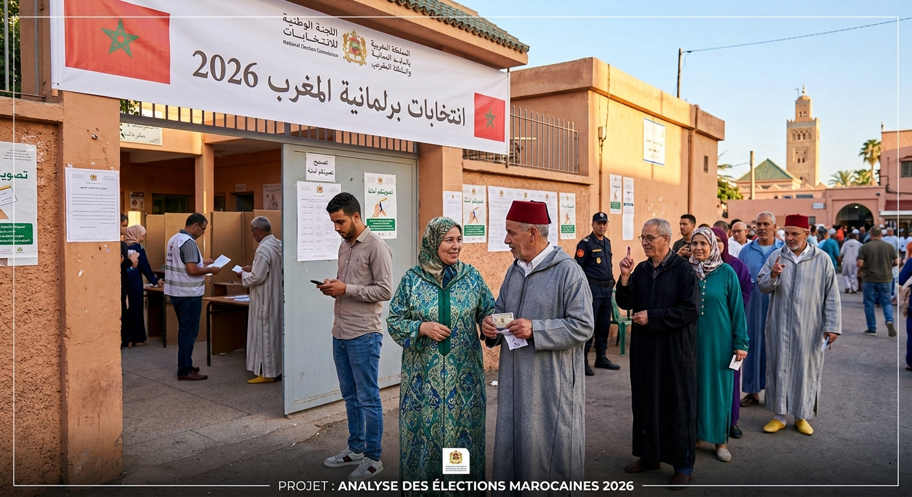

LES ELECTIONS AU MAROC:
APPLICATION WEB permettant de gérer une élection : ajouter , modifier ,supprimer et rechercher des candidats , enregistrer les votes et afficher des statistiques sur les résultats . ce projet m'a permet de pratiquer javascript , les tableaux , les fonctions , les boucles et les méthodes comme filter et find
- JAVASCRIPT
- GIT /GITHUB